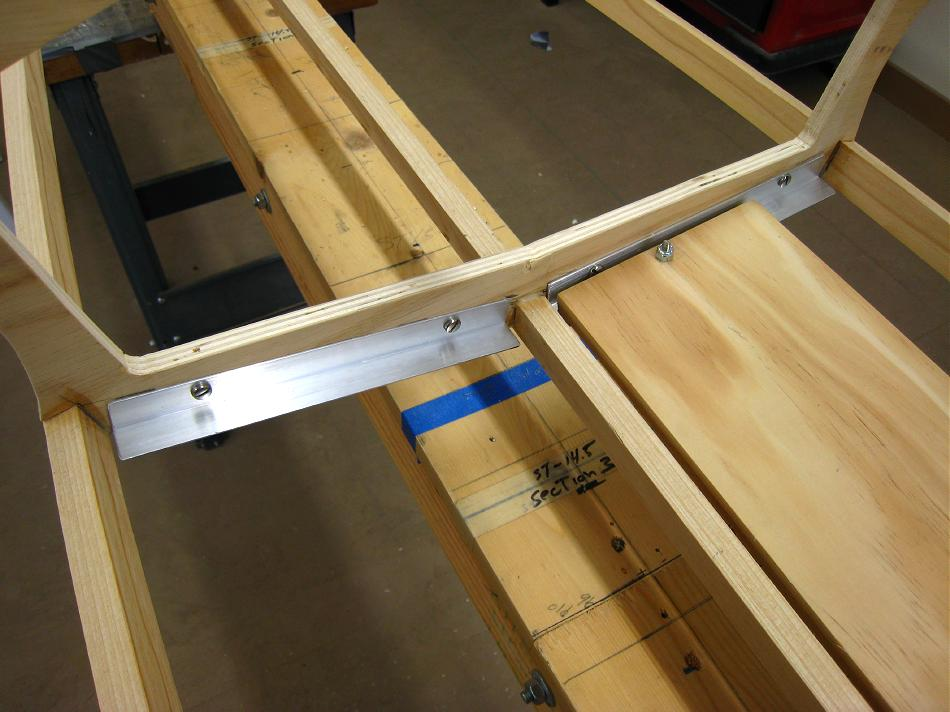

| Floor | Menu Previous Page Next Page |
|

A removable floor is a carry over from folding kayak construction. In case of damage, replacement, or simply to refinish the floor, it's nice to be able to remove it quickly. I have used this type floor for many years.
|
|